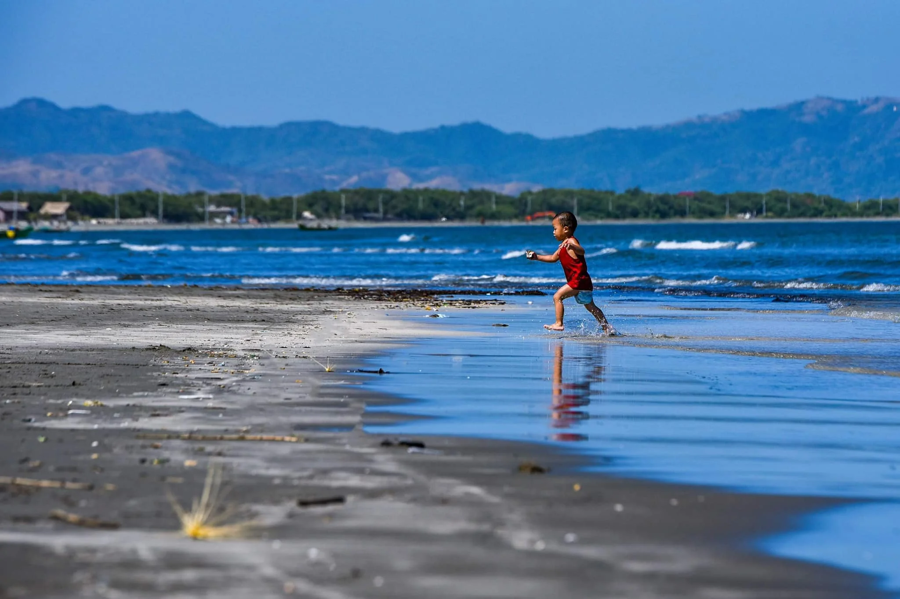
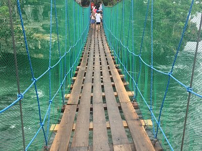

Must-Visit Destinations
Pangasinan is home to beautiful islands, beaches, waterfalls, and historical landmarks that attract tourists from all over the country.

Hundred Islands National Park
A famous island-hopping destination in Alaminos City with over 100 islands and scenic views.

Bolinao Falls
A refreshing waterfall destination perfect for swimming and nature trips in western Pangasinan.

Patar Beach
Known for its golden sunset and crystal-clear water, located in Bolinao.

Lingayen Beach
A historic beach near the capital, known for its long shoreline and calm waters.

Manaoag Church
A famous pilgrimage site visited by thousands of devotees every year.

Infanta Forest
A hidden natural escape with fresh air, mountains, and peaceful surroundings.
Why Visit Pangasinan?
Pangasinan offers a mix of nature, history, and culture, making it one of the best travel destinations in Northern Luzon.
Back to About